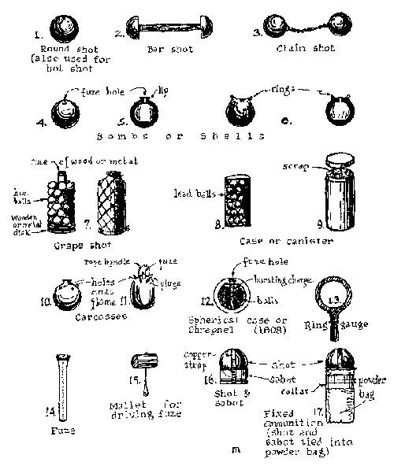
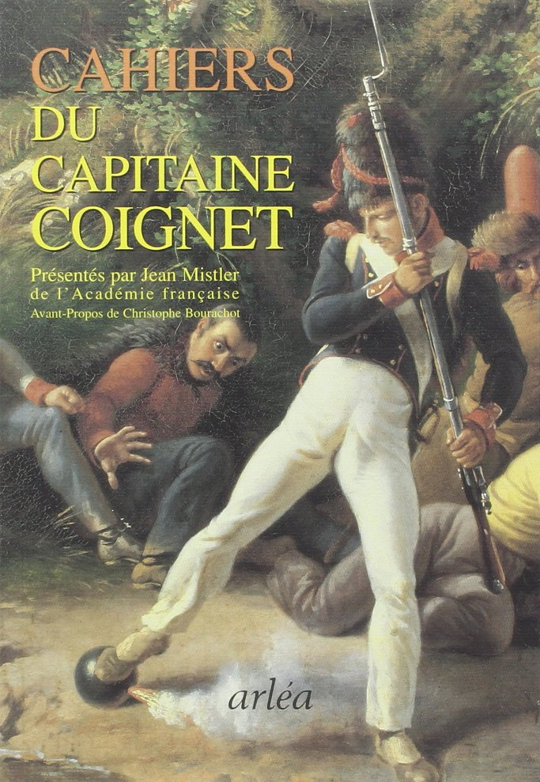
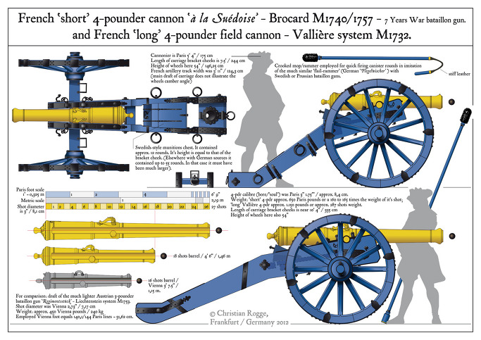
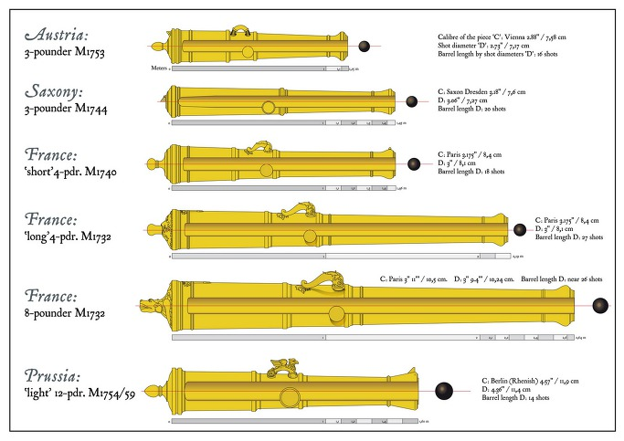
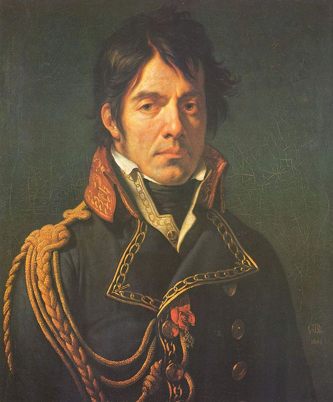
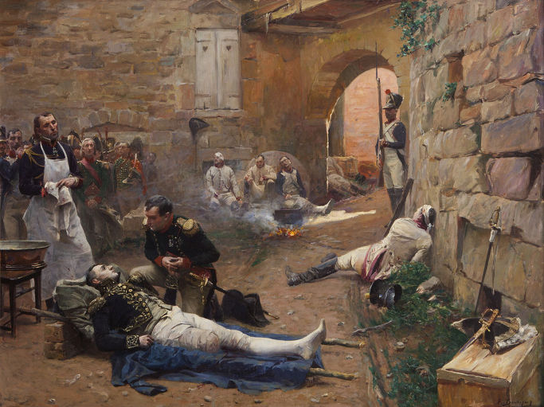
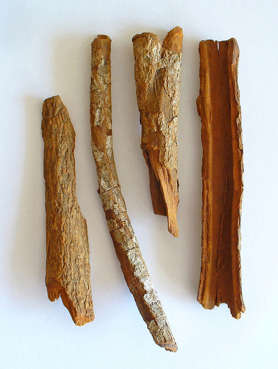

아스페른-에슬링 11편 - 소문과 눈물
게시: 2017-04-16T23:46:37+09:00
랍의 신참 근위대가 에슬링에서 철수하라는 나폴레옹의 명령을 거부하고 분전하여 에슬링을 탈환한 덕분에, 오후 5시 경부터 전투는 육박전에서 포격적으로 전환되기 시작했습니다. 당시의 대포에서도 폭발탄을 일부 쓰기는 했으나, 도화선에 의한 폭발탄이라 불발탄도 많았고, 또 흑색화약을 쟁여넣은 당시 폭발탄(shell 또는 bomb)은 요즘 수류탄 정도의 폭발력 밖에 없었으므로 심각한 위협이 되지는 않았습니다. 결국 대부분의 포탄은 글자 그대로 대포알(roundshot)이었고, 이것들은 속까지 쇳덩어리로 꽉 찬 것이라 병사들이 이런 것에 목숨을 잃으려면 직격을 당해야 했습니다.

(당시의 포탄 종류들입니다. Chain-shot이나 bar-shot 등은 주로 해군에서 쓰던 것입니다.)
요즘처럼 고폭약을 잔뜩 탑재하여 엄청난 위력의 파편과 화염을 뿌리는 포탄에 비하면 별 것 아닌 대포알이었지만, 당시 병사들에게는 두려움의 대상이었습니다. 장교들의 지휘 하에 촘촘한 대오를 이루고 서 있는데, 어디선가 쐐액하는 바람소리와 함께 눈에 보이지도 않는 거대한 낫이 날아와 바로 옆에 서 있는 친구를 순식간에 피떡으로 만들며 저 뒤로 낚아채가는 것 같았으니까요. 당시 전투에서 부교를 지키고 있던 근위대 소속 쿠아녜(Coignet)라는 이름의 병사의 수기에도 당시의 대포알들 이야기가 나옵니다. 당시 상황에서는 병사들이 3열 횡대로 서 있었는지, 한발의 대포알에 병사들이 3명씩 나가 떨어졌다고 쿠아녜는 적고 있지요. 무엇보다 대포알들이 주는 공포의 본질은, 그것들이 확실한 죽음을 가져오는 것임에도 불구하고 그에 대해 병사들이 할 수 있는 것이 아무것도 없다는 것에 있었습니다. 쿠아녜의 수기에는 그런 두려움에 대해 허세를 부리며 겁나지 않는다는 듯이 시덥잖은 농담을 주고 받는 근위대 병사들의 이야기가 잘 묘사되어 있습니다.

(쿠아녜의 수기는 '쿠아녜 대위의 노트'라는 제목으로 발간되었습니다. 쿠아녜는 원래 문맹의 농장 일꾼으로 자라났다가 군에 입대한 뒤 글을 배우고 부사관을 거쳐 장교로 승진한 사람입니다. 그래서 그가 쓴 수기는 철자나 문법 등이 많이 틀려서, 현대 프랑스인이 봐도 뭔 소리를 하는 것인지 다소 읽기가 힘들다고 합니다.)
란에게 그런 대포알의 공포가 직접 찾아든 것은 아직 해가 다 지지 않은 저녁 무렵, 그런 대포알들만 휙휙 날아다닐 뿐 전투 자체는 소강 국면에 접어들었을 때였습니다. 한숨 돌릴 상황이 되자, 그는 가까운 친구였던 푸제(Pierre-Charles Pouzet) 장군과 함께 서서 뭔가 이야기를 나누고 있었습니다. 푸제는 란이 이제 막 소위 나부랭이가 되어 군복도 제대로 못 갖춰 입은 혁명군 병사들을 거느리고 있던 남부 프랑스 미랄(Miral) 시절부터 함께 복무하던 선임 부사관 출신의 연장자였습니다. 그는 그 시절부터 란에게 존경받고 또 란의 사람됨을 알아봐준 오랜 친구였지요. 그런 전도유망한 후배를 둔 덕분에 푸제는 장군까지 승진했고, 평상시에도 란은 고민되는 일이 있을 경우 이 옛친구와 상의를 하곤 했습니다. 푸조의 머리통이 어디선가 날아온 작은 3파운드 포탄에 맞아 산산조각이 난 것은, 그가 란과 불과 2~3m 거리를 두고 서서 이야기하던 그 순간이었습니다. 옛친구의 피와 뇌 조각은 란의 몸에도 튀었습니다.

(이건 나폴레옹 시대보다 수십년 앞선, 7년 전쟁 당시 프랑스군의 4-파운드 포의 모습입니다. 같은 4-파운드 포라도 장포신이 있고 단포신이 있었는데, 그 크기와 포탄의 크기는 저 그림에 포함된 사람의 그림자를 보고 짐작하실 수 있습니다. 그림 소스는 http://crogges7ywarmies.blogspot.kr/2012/01/7yw-artillery-scale-drawings-part-2.html 입니다.)
란은 정말 많은 전투에서 온갖 끔찍한 광경을 실컷 본 바 있는 역전의 용사였으므로 피나 처참한 시체를 본다고 겁을 먹을 사람은 물론 아니었습니다. 그러나 1초 전까지 자기와 이야기 중이던 소중한 친구가 바로 눈 앞에서 머리없는 시체가 되어버리는 광경은 란마저도 흔들어 놓았습니다. 그는 무척 충격을 받은 모습으로, 비틀거리며 근처에 쓰러진 통나무로 가서 앉았고, 얼굴을 감싸고 고개를 숙인 채 잠시 앉아있었습니다.
당시 포병에게 가장 좋지 않은 환경은 비가 와서 질퍽해진 진흙밭이었습니다. 젖은 진흙땅은 포병 특성상 무거운 대포와 탄약차를 이동시키기에도 불리했지만, 적군에게 주는 2차 피해도 최소화시켰기 때문입니다. 위에서 언급한 대로 당시 포탄은 원시적인 도화선을 붙인 폭발탄과 속까지 쇳덩어리로 된 대포알이었는데, 두 탄종 모두에게 진흙은 최악이었습니다. 폭발탄이 진흙밭에 떨어지는 경우 도화선이 진흙에 파묻히면서 불발탄이 되는 경우가 많았습니다. 대포알의 경우, 설령 거리 계산이 잘못 되어 적군의 대오보다 훨씬 앞에 포탄이 떨어져도, 굳은 대지라면 포탄이 물수제비처럼 통통 튀며 그대로 적의 대오를 덮쳤습니다. 그런 경우 탄속이 크게 저하되기는 했으나, 그래도 적군의 다리나 허리를 박살내는데 필요한 운동 에너지는 아직 충분했습니다. 1815년 워털루 전투에서 나폴레옹이 패한 이유 중 하나로, 포병을 중시했던 나폴레옹이 당장 전투를 시작하지 않고 전날 내린 비로 인해 젖은 땅이 마르기를 기다렸기 때문이라고 하지요. 5월 22일 저녁, 아스페른-에슬링 전투가 거의 마무리되어가던 그 순간, 아스페른과 에슬링 사이의 대지는 말라 있어서 대포알이 튀어다니기에 딱 좋았습니다.
나폴레옹 전쟁 당시 영국 장교의 모험담을 그린 버나드 콘월(Bernard Cornwell)의 소설 'Sharpe' 시리즈 중 한편에 이런 이야기가 묘사되어 있습니다. 저 멀리서 한참 동안 그렇게 대지 위를 튕기며 날아온 프랑스군의 작은 대포알 하나가 눈에 띄게 느린 속도로 통통 튀어오자, 어린 북치기 소년병 하나가 다리를 뻗어 멈춰 세우려고 하다가 그만 발목이 날아가버리지요. 소년병이 고통과 놀라움에 쓰러져 엉엉 울자, 나이든 부사관이 뛰어와 '그런 포탄 건드리지 말라고 했지!' 라며 야단치는 장면이 나옵니다. 제1차 세계대전 당시를 그린 레마르크의 소설 '서부 전선 이상 없다'에서도 박격포탄이 하늘 위로 흔들흔들 날아오는 모습을 독일군 병사들이 보고 있다가 날아오는 방향이 이쪽이다 싶으면 얼른 도망쳐 피하는 장면이 묘사된 것을 보면, 나폴레옹 시대의 포탄 중에서 그렇게 힘을 다한 것들은 통통 튕기며 날아오는 것들이 눈에 보이기도 했을 것 같습니다.
5월 22일 저녁, 푸조의 머리통을 날려버린 것과 같은 오스트리아군의 3파운드 포 하나가 에슬링 남서쪽 그로스-엔저스도르프(Gross-Enzersdorf) 방향에서 발사되었습니다. 이 작은 대포알이 애초에 노렸던 목표물이 무엇인지는 알 방법이 없으나, 아마도 에슬링 외곽에 있던 프랑스군 병사들을 노렸던 것이 아닌가 합니다. 이 포탄은 너무 높게 조준이 되었는지, 목표물을 맞추지 못하고 에슬링을 지나 1km 이상을 날아서 도나우 강변의 평탄한 평원을 통통 튀며 가로질렀습니다. 대지 위를 한번 튕길 때마다 포탄의 속도는 점점 느려졌고, 그 운동 에너지가 거의 소진되어 얼마 못가 땅 위에 그냥 떨어져 멈출 때 즈음, 이 포탄은 마침내 거물급 목표물을 찾았습니다.

(저 위에 프랑스군 4-파운드 포의 크기 그림을 올려놓았습니다만, 오스트리아군의 3-파운드 포 및 그 포탄은 얼마나 더 작았는지 이 그림을 보고 짐작하실 수 있습니다. 역시 그림 소스는 http://crogges7ywarmies.blogspot.kr/2012/01/7yw-artillery-scale-drawings-part-2.html 입니다.)
란은 고개를 숙이고 있느라 이 포탄이 날아오는 것을 보지 못했습니다. 이 저주받은 3파운드짜리 포탄은 다리를 꼬고 앉아있던 란의 두 다리가 교차하는 무릎 부분을 정통으로 때렸습니다. 운동 에너지가 거의 소진된 상태에서 맞은 포탄인지라 다리가 절단되지는 않았으나 앉아있던 란을 쓰러뜨리기에는 충분했습니다. 깜짝 놀란 부관들이 우르르 달려들었는데, 란은 아직 부상의 심각함을 모르고 자신을 일으켜 달라고 부관들에게 말할 정도였습니다. 란의 왼쪽 무릎 윗부분은 심각한 부상을 입어 너덜너덜해진 상황이었고, 오른쪽 다리도 꽤 심한 부상을 입었기 때문에, 도저히 일어설 상황이 아니었지요. 당황한 부관들은 주변에서 나뭇가지를 구해오고 푸조 장군의 시체가 두르고 있던 망토를 벗겨와 그것으로 임시 들것을 만들어 란을 강변의 야전 진료소로 데려갔습니다. 란은 그 와중에도 푸조 장군의 시체에서 망토를 벗겨온 것이 불길하다며 몹시 언짢아 했다고 합니다.
부교 앞에는 프랑스군 수석 외과의사인 라리(Dominique Jean Larrey)가 다른 군의관들과 함께 부상병들의 팔다리를 마구 잘라내고 있었습니다. 그러던 차에 실려온 이 거물을 보고, 라리는 동료 의사들을 불러 모아 즉석 의료 회의를 시작했습니다. 라리는 나폴레옹의 최측근이자 자신과도 친구 사이인 란의 다리를 다른 일반 병사들처럼 마구 잘라낼 수는 없었던 것이지요. 일부 의사들은 상처를 본 뒤 양쪽 다리를 다 잘라내는 것이 안전하다고 주장했으나, 라리는 왼쪽 다리만 잘라내도 될 것 같다고 주장했고, 마침내 다른 동료들의 동의를 받아냈습니다. 문제는 아무도 집도를 하려하지 않았다는 것이었습니다. 상태가 위중한 심각한 부상이라, 생존 가능성이 높지 않다고 다들 속으로 판단했던 것이지요. 결국 라리 본인도 내키지 않는 손을 익숙하게 놀려 1분 30초만에 왼쪽 다리를 절단해냈습니다. 란은 절단 수술 후 로바우 섬으로 이송되었습니다.

(라리입니다. 그는 세계 최초의 앰뷸런스를 전장에서 운용한 사람으로도 유명하고, 워털루에서 웰링턴 공작이 그의 앰뷸런스를 향해서는 대포를 쏘지 말라고 지시하여 더욱 유명해졌습니다. 그는 워털루 전투 이후 몰래 프랑스 국경을 넘어 도주하려 했으나, 프로이센군에게 체포되어 즉결 처형될 위기에 빠지기도 했습니다. 그러나 그는 1813년 프로이센군 블뤼허 원수의 아들을 구해주고 치료해준 인연 덕분에 블뤼허 원수에게 특별 사면되어 식사 대접과 함께 여비까지 지급받고 석방되었습니다. 그는 한동안 집필 활동만 했으나 나폴레옹 사후 다시 의료계로 복귀해서 명성을 누리며 잘 살았습니다. 최후의 승자는 역시 의사입니다. 이과생 여러분, 열심히 공부해서 의대 가세요.)
로바우 섬에서는 나폴레옹이 다른 원수들과 회의를 마무리하던 중에 란의 부상 소식을 들었습니다. 나폴레옹은 즉각 란에게 달려갔고, 그는 란 옆의 흙바닥에 무릎을 꿇고 란의 손을 잡았고, 란의 피가 나폴레옹의 바지를 적시는 것에도 아랑곳하지 않았다고 합니다. 이 두 오랜 친구 사이의 만남은 아마 상당히 감동적인 장면이었을텐데, 정작 말은 많지 않았다고 합니다. 란이 부상과 수술의 쇼크로 인해 긴 대화를 할 상황이 아니었으니까요.

(란의 옆에 무릎 꿇은 나폴레옹입니다. 실제 환경은 저것보다 훨씬 더 열악했다고 합니다.)
5월 22일 밤 ~ 23일 아침까지, 로바우 섬에서 란은 원수라는 지위에도 불구하고 일반 병사들과 똑같은 치료와 간호를 받았습니다. 이렇게 써놓으니 마치 뭔가 대단하고 숭고한 일 같습니다만, 실상은 전혀 그렇지 않았습니다. 애초에 이 전투가 패배로 끝나게 된 이유가 나폴레옹이 지나치게 쾌속 진격을 강조하다보니 다부의 병력이 로바우 섬으로 건너오기도 전에 부교가 끊어진 것이었지요. 승리에 필요한 병력조차 못 건너올 상황이었으니, 부상병들을 위한 기본적인 보급품도 전혀 준비가 되어 있지 않았습니다. 덕분에, 란이나 일개 졸병이나 모두 공평하게 치료는 커녕 깨끗한 식수조차 얻지 못하고 밤새도록 고통과 갈증, 추위에 시달려야 했습니다. 5월 날씨답게 낮에는 상당히 더운 편이었으나 밤이 되자 담요도 없이는 매우 쌀쌀하게 기온이 내려가 담요 없이는 밤을 보내기가 어려웠던 것입니다.
다음날 아침이 되자 란은 보트 편으로 도나우 강 우안 쪽으로 후송되었습니다. 란의 부관들 대부분은 쾌적한 비엔나로 돌아가 전장의 먼지를 털어내고 크고 작은 부상의 치료를 받았으나, 란은 로바우 섬 건너편인 카이저에버스도르프의 어느 양조업자의 집 2층을 병상을 꾸몄습니다. 이는 계속 현장에 남아 있어야 하는 나폴레옹의 사령부와, 거기 있는 나폴레옹의 수석 외과의인 라리 곁에 란을 두고 보살피려는 배려였습니다. 그러나 이 배려는 결국 좋지 않은 결과를 낳았습니다. 이 양조업자의 집은 지대가 낮고 습기찬 곳이었고, 바로 옆에 마굿간도 붙어 있어서 말똥 냄새가 퀴퀴한 곳이었습니다. 결코 환자에게 좋은 공간이 아니었지요.
이곳에서 란은 매일 나폴레옹과 라리의 방문을 받으며 집중 간병을 받았습니다. 또한 그 양조업자의 집 주변은 충성스러운 그의 척탄병 부하들이 진을 치고 앉아 장사진을 이루었고, 여러 고위 장교들과 친구들이 병문안차 그의 병상을 찾았습니다. 란은 나폴레옹에게 어서 빨리 회복하여 군에 복귀하겠다고 했고, 친구들에게는 향후에는 마차를 타고서 부하들의 돌격을 지휘하겠다고 농담을 하기도 했습니다. 당시 비엔나에는 프랑크(Franck) 박사라는 의족 전문 의사가 있었는데, 란은 어쩌면 그 사람이 만들어준 의족을 달고 걷거나 말을 탈 수도 있을지 모른다고 말하기도 했습니다. 나폴레옹도 부하들에게 란의 상태는 희망적이며 그의 목숨을 구할 수 있을 것이라고 자신감을 내비쳤습니다.
그러나 그런 것들은 모두 치기어린 군인의 허세에 불과했습니다. 란도 자신의 상태가 심각하다는 것을 이미 알고 있었고, 그 양조업자 집에 온지 2~3일이 지나자 상태가 급격히 나빠졌습니다. 당시 부상자에 대한 의료 기술은 기본적으로 고대 로마 시대에 비해 크게 달라진 것이 없었습니다. 즉, 화살촉이나 총알 등 이물질을 수술로 뽑아내고 심하게 망가진 팔다리를 잘라낸 뒤, 부상병의 몸이 세균 감염과 싸워 이기길 기다리는 것 뿐이었습니다. 당시엔 혈관 봉합 수술 기술도 없었고 세균의 존재 자체를 아예 몰랐으므로 수술 도구를 끓는 물이나 알코올로 소독하지도 않았으니, 간단한 수술도 결국 괴저(gangrene) 또는 패혈증(blood poisoning)으로 인한 사망에 이르는 경우가 많았습니다. 란의 생명을 빼앗아 간 것은 패혈증이었습니다. 이로 인해 고열이 발생하자, 당시로서는 매우 비싼 약재였던 남미산 기나수 껍질(cinchona bark)로 만든 약, 즉 키니네(quinene)를 투약하는 등 나름 애를 쓰기는 했으나, 키니네는 말라리아로 인한 고열에나 효과가 있었을 뿐 패혈증에는 아무런 효과도 없었습니다.

(기나수 껍질입니다. 당시 영국이 대륙봉쇄정책을 펼치던 프랑스에 대해 유일하게 금수품목으로 정해놓은 것이 바로 목화솜과 이 기나수 껍질일 정도로, 전략 군수품에 해당하는 귀한 물자였습니다.)
란이 나폴레옹에게 마지막으로 남긴 유언 같은 말에 대한 논란은 바로 이 며칠 중 하루에 대한 것이었습니다. 책의 형태로 남겨진 것은 가시쿠르(Cadet de Gassicourt)라는 군종 약사가 남긴 회고록에서였는데, 아스페른-에슬링 전투에도 참전했던 이 약사가 남긴 기록에 따르면 란은 혼수상태에 빠지기 전, 나폴레옹에게 이렇게 과감한 직언을 남겼다고 합니다.
"내 부인과 아이들을 돌봐달라는 부탁은 하지 않겠네. 내가 자네를 위해 싸우다 죽으니, 굳이 그럴 필요가 없지. 자네의 체면 때문에라도 내 가족을 보살피는 것이 자네의 의무일테니까 말일세. 지금 내가 하는 비판때문에 자네가 내 가족을 홀대할 까봐 두렵지도 않네. 자넨 중대한 실수를 저질렀어. 그것 때문에 자네는 절친을 잃고 있네. 그래도 자네는 변하지 않겠지. 자네의 만족할 줄 모르는 야망이 결국 자네를 망칠거야. 자넨 그럴 필요가 있지도 않은데, 신경도 별로 쓰지 않고 후회도 없이 자네를 위해 일하는 부하들을 희생시키지. 자네의 그런 배은망덕이 자넬 존중하는 사람들을 멀어지게 하는걸세. 자네 주변에 남은 것은 아첨꾼들 뿐이야. 자네 친구들 중에는 진실을 말하려는 자가 하나도 없다네. 결국 자네는 배신당해 버림받을걸세. 서둘러 이 전쟁을 끝내게. 그게 자네 부하 장군들의 바람이고, 자네 백성들의 바람이야. 그러면 자네의 권력이 더 강해지지는 않겠지만, 더 사랑받는 군주가 될걸세. 내 이런 말들을 용서하게. 이건 자네를 정말 소중히 여기기 때문에 하는 말이니까."
가시쿠르의 회고록은 부르봉 왕가의 복위 뒤에 나온 것이니, 어쩌면 부르봉 왕가의 입맛에 맞춰주기 위해 일부러 나폴레옹의 명예를 실추하는 내용을 집어넣은 것일 수도 있습니다. 마지막 순간까지도 란과 함께 하며 그의 병구완을 했던 그의 부관 마르보의 회고록에 따르면 란이 나폴레옹과 마지막으로 이야기를 나눌 때 그의 상체를 부축했던 것이 바로 자기인데, 란이 그런 말을 했다는 주장은 터무니없는 거짓이라고 합니다. 나폴레옹도 세인트 헬레나 섬에서 그런 이야기를 듣고 노발대발하며 다 거짓말이라고, 란은 최후의 순간까지도 자신에게 충성스러웠다고 주장했습니다. 실제로 어떤 일이 있었는지는 아무도 알 수 없습니다. 다만, 실제로 란이 저런 말을 했다고 해도 나폴레옹은 그 충언을 따르지 않았을 것이고 또 그걸 끝까지 숨겼을 것입니다.
란은 마지막 며칠 동안은 거의 의식이 혼미한 상태로 고통에 시달리다, 부상을 입은지 9일만인 5월 31일 새벽 5시 45분 경 사망했습니다. 란이 사경을 헤매전 며칠 동안에도 나폴레옹은 혹시나 하는 마음으로 매일 란을 찾았습니다. 5월 30일 저녁, 나폴레옹은 라리로부터 이제 란은 가망이 없다는 이야기를 듣고 크게 상심하여 다시 란의 병상을 찾았으나, 란은 혼수 상태였으므로 별다른 이야기를 나누지 못했습니다. 그 다음날 아침 일찍, 나폴레옹은 아침식사를 들기도 전에 다시 란의 곁을 찾았으나, 이미 란은 새벽에 사망한 뒤였습니다.
그 양조업자의 집을 둘러싼 척탄병들의 통곡이나 란의 친구들의 상심을 묘사하는 것은 무의미할 것입니다. 나폴레옹은 병사들을 무척 아끼는 것처럼 말했고 또 실제로도 그런 편이었지만, 정작 전장에서 병사들의 희생을 최소화하느냐 승리를 거두느냐의 양자택일을 해야 하는 경우 언제나 서슴지 않고 병사들의 목숨을 희생시켰습니다. 그의 부하 원수들은 나폴레옹을 평가할 때 '무척 유능한 사람이었으나 병력의 보존에는 관심이 없었다'라고 말하기도 할 정도였지요. 그런 그에게도 란의 상실은 매우 심각한 타격이었습니다. 냉혈한 나폴레옹도 란의 죽음을 알게 된 뒤 사령부로 돌아와 아침식탁에 앉아서는 이렇게 한탄하며 눈물을 흘렸다고 전해집니다.
"모든 일은 결국 이런 식으로 끝나는구나 !"
Source : The Emperor's Friend: Marshal Jean Lannes By Margaret S. Chrisawn Three Napoleonic Battles By Harold T. Parker The Life of Napoleon Bonaparte, by William Milligan Sloane https://en.wikipedia.org/wiki/Battle_of_Aspern-Essling http://www.historyofwar.org/articles/battles_aspern_essling.html https://www.napoleon.org/en/history-of-the-two-empires/articles/the-battle-of-aspernessling/ http://obscurebattles.blogspot.kr/2016/05/aspern-essling-1809.html https://www.napoleon.org/en/history-of-the-two-empires/articles/how-history-is-written-marechal-lannes-last-words-to-napoleon/
https://www.gutenberg.org/files/20483/20483-h/20483-h.htm